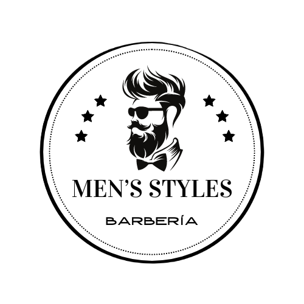

<!DOCTYPE html>
<html lang="es"></html>
    <head>
        <meta charset="UTF-8">
        <meta name="viewport" content="width=device-width, initial-scale=1.0">
        <title>Men's Styles</title>
        <link rel="stylesheet" href="QuienesSomos.css">
        <link rel="shortcut icon" href="Logo.png">
        <header id="main-header">
          
            <a id="logo-header" href="#">
                <span class="site-name">Men's Styles</span>
                <span class="site-desc">Facturación/ Gestion de información / Ventas</span>
            </a> <!-- / #logo-header -->
            
            <nav>
                <ul>
                    <li><a href="Inicio.html">Inicio</a></li>
                    <li><a href="QuienesSomos.html">¿Quienes Somos?</a></li>
                    <li><a href="Registro.html">Registrate</a></li>
                    <li><a href="Login.html">Ingresar</a></li>
                    <li><a href="#">Contacto</a></li>
                </ul>
            </nav><!-- cierre de opciones de navegación -->
    
        </header><!-- / cierre de header -->
         <body>
            <div>
            <center>
                <H1>¿Quienes Somos? Men's Syles</H1>
            </center>
            
            <fieldset>
                <ul>
                    <p>Nosotros somos una Aplicacion Beta que muestra diferentes estilos de cortes de las barberias en el barrio Jackeline que tiene como objetivo. hacer reservaciones de citas en barberias y vender diferentes productos de barberias. también buscamos hacer registros de la contabilidad de ventas y las calificaciones del servicio de los barberos.</p>
                </ul>
                </style>
            </fieldset>
            <center>
                <H1>Misión</H1>
            </center>  
            <fieldset>
                <ul>
                    <p>Facilitar el acceso a los servicios de barbería en el barrio Jackeline mediante una plataforma que permite a los usuarios reservar citas, conocer estilos de cortes y adquirir productos especializados. Nuestra aplicación busca mejorar la experiencia de los clientes y optimizar la gestión interna de las barberías, incluyendo la venta de productos, el control de la contabilidad y la evaluación del servicio, apoyando así el crecimiento del negocio.</p>
                </ul>
                </style>
            </fieldset>
            <center>
                <H1>Visión</H1>
            </center>
            <fieldset>
                <ul>
                    <p>Convertirnos en la aplicación líder para las barberías del barrio Jackeline y otros barrios similares, promoviendo la digitalización del sector, aumentando la visibilidad de los negocios locales y mejorando la satisfacción del cliente. Aspiramos a ser la herramienta principal que barberos y clientes utilizan para gestionar sus servicios, aumentando la calidad y eficiencia de los clientes.</p>
                </ul>
                </style>
            </fieldset>
            </div>
            </body>
            <footer id="main footer">
                <p>&copy; 2025 <a href="http://Men's Style.com">Men's Style.com</a></p>
            </footer 